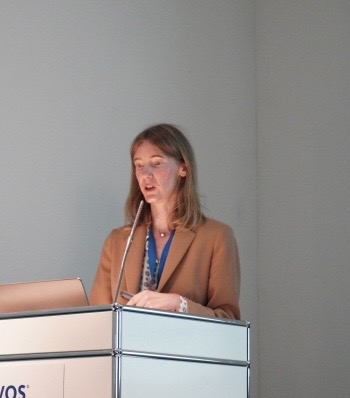
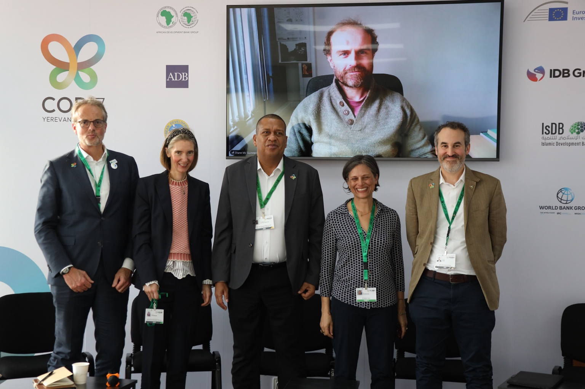
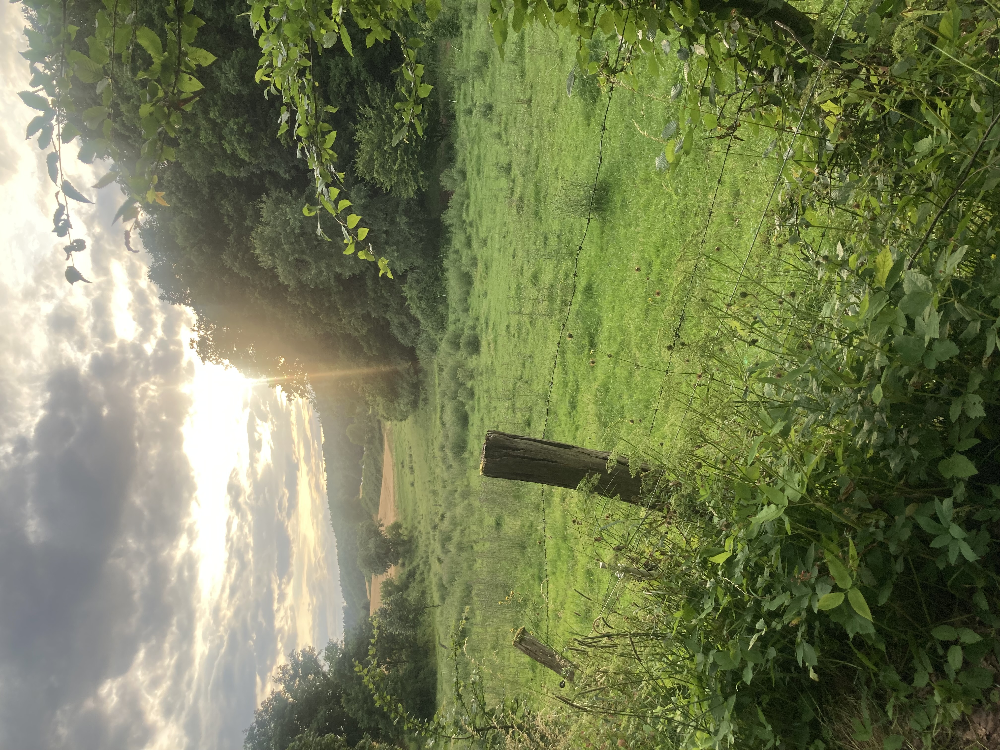

About


Panel discussion on "Peatlands and Wetlands as Strategic Assets: Financing Resilience, Security, and the Next Generation of Nature Markets",
at the MDB Pavilion, CBD COP17, Yerevan, Armenia, 2026.
What am I working on?
I work on the integration of sustainability objectives into business and finance, with a particular focus on nature-related decisions.
Over the last years, this has included:
- Sustainable project finance and the application of the mitigation hierarchy,
- Integrating multiple sustainability objectives and KPIs — such as reuse or circularity of materials, energy efficiency, material choices, biodiversity and water strategies, and carbon reduction measures — into real estate development and urban infrastructure,
- Advancing the integration of nature- and climate-related targets into business and financial decision-making,
- Climate- and nature-related physical and transition risks, and nature-based adaptation and resilience measures,
- Nature and carbon credit policy and environmental markets.
More recently, I have been developing this work further through quantitative, model-based approaches to decision-making under uncertainty. This includes a Bayesian sequential model for ecosystem restoration.
Professional affiliations and expert roles
- European Commission Joint Research Centre, External expert on Nature Credit Price Formation and Sustainable Market Development 01/26 – 08/26. Report forthcoming.
- IUCN Impact Mitigation and Ecological Compensation Thematic Group member.
- Member of the IUCN Commission on Ecosystem Management .
- Ecosystem Services Partnership member.
- Member of the Society for Conservation Biology .
- IPBES Contributing Author to the Business and Biodiversity Assessment 11/23 – 02/26. Find the full "Methodological assessment of the impact and dependence of business on biodiversity and nature’s contributions to people (business and biodiversity assessment)" and related materials here: https://www.ipbes.net/business-impact
- SBTi Expert Working Group on Timber and Wood Fibre Pathways, expert working group member 05/2025 – 04/2026.
- EU CRCF expert group on methodology for carbon storage in biobased materials, expert working group member 01/2025 – 09/2025.
- Leipzig University, Leipzig, Germany, IMISE, Affiliated Researcher.
